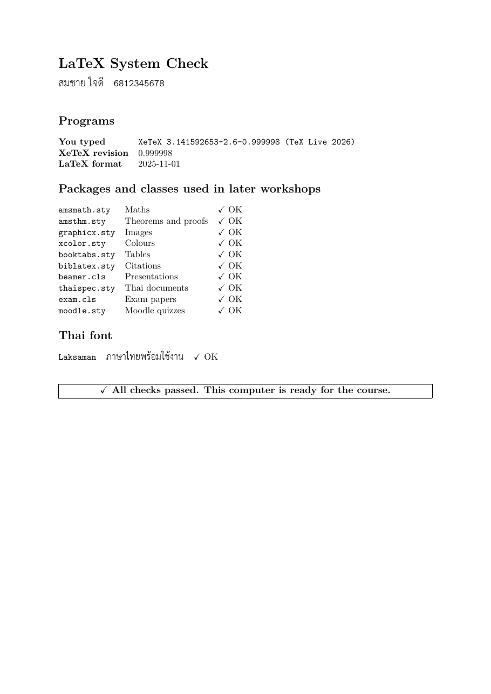

วัตถุประสงค์
เมื่อจบ Workshop นี้ นักศึกษาจะสามารถ
- ติดตั้งระบบ LaTeX ที่เหมาะกับระบบปฏิบัติการของตนเอง ได้แก่ MiKTeX (Windows), MacTeX (macOS) หรือ TeX Live (Linux)
- ติดตั้งและตั้งค่าโปรแกรมแก้ไขข้อความ Sublime Text และโปรแกรมอ่าน PDF ที่ใช้ตลอดรายวิชา
- เปิดเทอร์มินัลในโฟลเดอร์งาน เปลี่ยนโฟลเดอร์ด้วย
cdและดูรายชื่อไฟล์ด้วยlsหรือdirได้ - คอมไพล์ไฟล์ LaTeX ด้วย
pdflatexและxelatexและยืนยันว่าแพ็กเกจและฟอนต์ที่ต้องใช้ในรายวิชาพร้อมใช้งาน
ก่อนเริ่ม
Workshop นี้ทำในชั้นเรียน แต่ไฟล์ติดตั้งมีขนาดใหญ่ (MacTeX ประมาณ 6 GB) ถ้าทำได้ให้ดาวน์โหลดไฟล์ติดตั้งมาก่อนเข้าเรียน และเสียบสายชาร์จไว้ระหว่างติดตั้ง
- พื้นที่ว่างในดิสก์อย่างน้อย 10 GB และสิทธิ์ผู้ดูแลเครื่อง (administrator) สำหรับติดตั้งโปรแกรม
- รายวิชานี้ไม่ใช้โปรแกรม IDE สำหรับ LaTeX (เช่น TeXstudio หรือ Overleaf) แต่ใช้ Sublime Text คู่กับเทอร์มินัล เพื่อให้เห็นว่าการเรียงพิมพ์เกิดขึ้นอย่างไรจริง ๆ
- ถ้าเครื่องเคยติดตั้ง LaTeX ไว้แล้ว ให้ข้ามไปทำ Part B ได้เลย ถ้าผ่านทุกข้อก็ไม่ต้องติดตั้งใหม่
ไฟล์ที่ได้รับ
ดาวน์โหลด installation.zip แล้วแตกไฟล์ (Extract) ไว้ในที่ที่หาง่าย เช่น Desktop จะได้โฟลเดอร์ installation ดังนี้
installation/
├── doc.pdf ชิ้นงานต้นแบบ (ผลการตรวจสอบระบบที่ผ่านทุกข้อ)
├── hello.tex ไฟล์ทดสอบแรกสำหรับ pdflatex
└── check.tex ไฟล์ตรวจสอบระบบสำหรับ xelatex (แก้เพียง 3 บรรทัด)ติดตั้ง
ประมาณ 60 นาทีเลือกแท็บตามระบบปฏิบัติการของเครื่อง แล้วทำทีละข้อ ระหว่างรอติดตั้งระบบ LaTeX ให้ทำข้อ A2–A4 ไปพร้อมกันได้
- A1 ติดตั้งระบบ LaTeX
Windows
ใช้ MiKTeX ดาวน์โหลดได้ที่ miktex.org/download
- ดาวน์โหลด Basic MiKTeX Installer สำหรับ Windows (ประมาณ 150 MB) แล้วดับเบิลคลิกเพื่อติดตั้ง
- ทำตามขั้นตอนที่แสดง ที่ตัวเลือก Install missing packages on-the-fly ให้เลือก Always เพื่อให้ MiKTeX ดาวน์โหลดแพ็กเกจที่ยังไม่มีให้เองเมื่อคอมไพล์
- รอจนแถบความคืบหน้าเต็ม แล้วกด Close
- เปิดโปรแกรม MiKTeX Console จากเมนู Start ไปที่แท็บ Updates กด Check for updates แล้วกด Update now
macOS
ใช้ MacTeX ดาวน์โหลดได้ที่ tug.org/mactex
- ดาวน์โหลดไฟล์
MacTeX.pkg(ประมาณ 6 GB) ด้วย Safari - ดับเบิลคลิกไฟล์ที่ได้ แล้วทำตามขั้นตอนที่แสดง ในหน้า Installation Type กด Customize แล้วเอาเครื่องหมายออกจาก GUI-Applications ได้ เพราะรายวิชานี้ไม่ใช้
- เมื่อติดตั้งเสร็จ ให้ปิดหน้าต่าง Terminal ทุกหน้าต่างแล้วเปิดใหม่ คำสั่ง LaTeX จึงจะใช้ได้
Linux
ใช้ TeX Live จาก tug.org/texlive ติดตั้งด้วยคำสั่งในเทอร์มินัล (ใช้เวลานานตามความเร็วอินเทอร์เน็ต)
$ cd /tmp $ wget https://mirror.ctan.org/systems/texlive/tlnet/install-tl-unx.tar.gz $ zcat install-tl-unx.tar.gz | tar xf - $ cd install-tl-* $ sudo perl ./install-tl --no-interactionจากนั้นเพิ่มโฟลเดอร์ของโปรแกรมไว้หน้า
PATHในไฟล์~/.bashrc(เปลี่ยน2026ให้ตรงกับปีที่ติดตั้ง) แล้วเปิดเทอร์มินัลใหม่$ echo 'export PATH=/usr/local/texlive/2026/bin/x86_64-linux:$PATH' >> ~/.bashrc - A2 ติดตั้ง Sublime Text จาก sublimetext.com/download (ใช้ได้ทั้ง Windows, macOS และ Linux)
- เปิดการตัดบรรทัดอัตโนมัติด้วยเมนู View → Word Wrap
- ทุก Workshop จะเปิดทั้งโฟลเดอร์งานด้วยเมนู File → Open Folder แล้วเลือกไฟล์จากแถบด้านซ้าย
- ยังไม่ต้องติดตั้งแพ็กเกจเสริมที่คอมไพล์ LaTeX ให้อัตโนมัติ (เช่น LaTeXTools)
- A3 ตั้งค่าการเปิดไฟล์
Windows
- ติดตั้ง SumatraPDF จาก sumatrapdfreader.org แล้วตั้งเป็นโปรแกรมเปิด PDF ค่าเริ่มต้น (คลิกขวาที่ไฟล์ PDF ใดก็ได้ → Open with → Choose another app → เลือก SumatraPDF → Always) เพราะ SumatraPDF ไม่ล็อกไฟล์และโหลดไฟล์ใหม่ให้เองเมื่อคอมไพล์ซ้ำ
- เปิดการแสดงนามสกุลไฟล์ใน File Explorer ที่เมนู View → Show → File name extensions เพื่อไม่ให้เผลอบันทึกเป็น
check.tex.txt
macOS
ใช้โปรแกรม Preview ที่มากับเครื่อง ซึ่งโหลดไฟล์ใหม่ให้เองเมื่อคอมไพล์ซ้ำ และควรเปิดการแสดงนามสกุลไฟล์ใน Finder ที่เมนู Finder → Settings → Advanced → Show all filename extensions
Linux
ใช้โปรแกรมอ่าน PDF ค่าเริ่มต้นของระบบ (เช่น Document Viewer) ไม่ต้องติดตั้งเพิ่ม
- A4 เปิดเทอร์มินัลในโฟลเดอร์ installation
Windows
เปิดโฟลเดอร์
installationใน File Explorer คลิกที่แถบที่อยู่ (address bar) พิมพ์powershellแล้วกด EnterPS> dir PS> cd .. PS> cd installationmacOS
เปิดแอป Terminal พิมพ์
cdตามด้วยเว้นวรรค แล้วลากโฟลเดอร์installationจาก Finder มาวางในหน้าต่าง Terminal แล้วกด Enter$ ls $ cd .. $ cd installationLinux
เปิด Terminal แล้วไปที่โฟลเดอร์ด้วย
cdเช่นcd ~/Desktop/installation$ ls $ cd .. $ cd installationls(หรือdir) แสดงรายชื่อไฟล์ในโฟลเดอร์ปัจจุบัน ต้องเห็นdoc.pdf,hello.texและcheck.texcd ..ย้ายขึ้นไปหนึ่งระดับ และcd ชื่อโฟลเดอร์เข้าไปในโฟลเดอร์นั้น- กดลูกศรขึ้น ↑ เพื่อเรียกคำสั่งเดิมโดยไม่ต้องพิมพ์ใหม่ และกด Tab ระหว่างพิมพ์ชื่อไฟล์เพื่อให้เติมชื่อให้เอง
Windows
PS> pdflatex --version MiKTeX-pdfTeX ... (MiKTeX ...)macOS
$ pdflatex --version pdfTeX 3.141592653-2.6-1.40.29 (TeX Live 2026)Linux
$ pdflatex --version pdfTeX 3.141592653-2.6-1.40.29 (TeX Live 2026)ถ้าบรรทัดแรกแสดงรุ่นของโปรแกรม แปลว่าติดตั้งสำเร็จ ถ้าขึ้นว่าไม่รู้จักคำสั่ง ให้ดูหัวข้อข้อผิดพลาดที่พบบ่อย
pdflatex --version แสดงรุ่นของโปรแกรม (2) Sublime Text เปิดโฟลเดอร์ installation ได้
และ (3) เทอร์มินัลอยู่ในโฟลเดอร์ installation และ ls หรือ dir แสดงไฟล์ครบ 3 ไฟล์
ตรวจสอบระบบ
ประมาณ 30 นาทีคอมไพล์ไฟล์ทดสอบ 2 ไฟล์ เพื่อยืนยันว่าเครื่องพร้อมสำหรับทุก Workshop ในรายวิชา แล้วส่งผลการตรวจสอบเป็นงานของ Workshop นี้
- B1 คอมไพล์ครั้งแรก เปิด
hello.texใน Sublime Text ดูเนื้อหา แล้วในเทอร์มินัลพิมพ์
บรรทัดท้าย ๆ ของผลลัพธ์ควรเป็น$ pdflatex hello.tex
จากนั้นเปิดไฟล์ PDFOutput written on hello.pdf (1 page, 24944 bytes). Transcript written on hello.log.Windows
PS> start hello.pdfmacOS
$ open hello.pdfLinux
$ xdg-open hello.pdfหลังคอมไพล์
ls(หรือdir) แสดงไฟล์ใหม่อะไรบ้าง - B2 กรอกข้อมูลใน check.tex พิมพ์คำสั่ง
แล้วคัดลอกบรรทัดแรกของผลลัพธ์ (เลือกข้อความด้วยเมาส์ แล้วกด Ctrl+C หรือ ⌘+C) เปิด$ xelatex --versioncheck.texใน Sublime Text แก้ 3 บรรทัดบนสุด แทนข้อความใน<...>ด้วยชื่อ นามสกุล รหัสนักศึกษา และบรรทัดที่คัดลอกมา เช่น
ห้ามแก้ส่วนที่เหลือของไฟล์ แล้วบันทึกไฟล์\newcommand{\studentname}{สมชาย ใจดี} \newcommand{\studentid}{6812345678} \newcommand{\versionline}{XeTeX 3.141592653-2.6-0.999998 (TeX Live 2026)} - B3 ตรวจสอบระบบ คอมไพล์ด้วย XeLaTeX (ซึ่งรองรับฟอนต์ภาษาไทย)
เปิด$ xelatex check.texcheck.pdfแล้วเปรียบเทียบกับ doc.pdf ทุกแถวต้องแสดง ✓ OK และกล่องล่างสุดต้องเป็น All checks passedผู้ใช้ MiKTeX การคอมไพล์ครั้งแรกจะช้ากว่าปกติ เพราะ MiKTeX ดาวน์โหลดแพ็กเกจที่ยังไม่มีให้เอง ถ้ามีหน้าต่างถามให้ติดตั้งแพ็กเกจ ให้กด Install แล้วรอจนคอมไพล์เสร็จแถวใดที่ขึ้น × missing ให้ดูวิธีแก้ในหัวข้อข้อผิดพลาดที่พบบ่อย แล้วคอมไพล์ใหม่จนผ่านทุกข้อ
- B4 ตรวจโปรแกรมที่ใช้ภายหลัง Workshop เรื่องการอ้างอิงจะใช้โปรแกรม
latexmkและbiberทดสอบด้วย
ตัวเลขรุ่นของแต่ละเครื่องอาจต่างจากตัวอย่างได้ ขอเพียงไม่ขึ้นว่าไม่รู้จักคำสั่ง$ latexmk --version Latexmk, John Collins, 9 March 2026. Version 4.88 $ biber --version biber version: 2.22

ส่งงาน
เปลี่ยนชื่อไฟล์ check.tex เป็น installation_<รหัสนักศึกษา>.tex แล้วคอมไพล์ใหม่ด้วยชื่อนั้น จะได้ PDF ชื่อเดียวกันโดยอัตโนมัติ ส่งทั้งไฟล์ .tex และ .pdf
$ xelatex installation_6812345678.texรายการตรวจสอบก่อนส่ง
เพิ่มเติม
ไม่บังคับ · ประมาณ 15–20 นาที- C1 อัปเดตระบบ LaTeX ควรทำเป็นครั้งคราว และเมื่อพบว่าแพ็กเกจเก่าเกินไป
Windows
เปิด MiKTeX Console ไปที่แท็บ Updates กด Check for updates แล้วกด Update now ส่วนแท็บ Packages ใช้ค้นหาและติดตั้งแพ็กเกจทีละตัวได้
macOS
$ sudo tlmgr update --self --allLinux
$ sudo tlmgr update --self --allถ้า
sudoหาtlmgrไม่พบ ให้ใช้sudo env PATH="$PATH" tlmgr update --self --all - C2 เปิดคู่มือในเครื่อง ระบบ LaTeX มีคู่มือของแพ็กเกจมาด้วย เปิดได้โดยไม่ต้องใช้อินเทอร์เน็ต
$ texdoc lshort $ texdoc amsmathคู่มือ The Not So Short Introduction to LaTeX (lshort) มีกี่บท และบทใดเกี่ยวกับสมการคณิตศาสตร์
- C3 หาตำแหน่งไฟล์ของแพ็กเกจ คำสั่ง
kpsewhichบอกว่าไฟล์ที่ LaTeX ใช้อยู่ที่ใด$ kpsewhich article.cls $ kpsewhich Laksaman.otfไฟล์ทั้งสองอยู่ในโฟลเดอร์ใดของเครื่อง
ข้อผิดพลาดที่พบบ่อย
| อาการ | สาเหตุและวิธีแก้ |
|---|---|
'pdflatex' is not recognized ... (Windows) หรือ command not found: pdflatex |
เทอร์มินัลเปิดไว้ก่อนติดตั้งเสร็จ ให้ปิดแล้วเปิดเทอร์มินัลใหม่ ถ้ายังไม่ได้ให้รีสตาร์ตเครื่อง
บน Linux ให้ตรวจว่าเพิ่ม PATH ใน ~/.bashrc แล้ว และปีกับชื่อโฟลเดอร์ตรงกับที่ติดตั้ง |
| MiKTeX แสดงหน้าต่างถามให้ติดตั้งแพ็กเกจ | เป็นเรื่องปกติของการคอมไพล์ครั้งแรก กด Install แล้วรอ ถ้าไม่อยากให้ถามอีก ให้เปิด MiKTeX Console ที่เมนู Settings แล้วเลือก Always install missing packages on-the-fly |
แถวของแพ็กเกจขึ้น × missing |
Windows ให้ติดตั้งแพ็กเกจนั้นจาก MiKTeX Console แท็บ Packages
macOS และ Linux ให้ใช้ sudo tlmgr install ชื่อแพ็กเกจ แล้วคอมไพล์ใหม่ |
แถว Laksaman ขึ้น × missing หรือข้อความภาษาไทยเป็นกล่องสี่เหลี่ยม |
ยังไม่มีฟอนต์ภาษาไทยของ TLWG บน Windows ให้ติดตั้งแพ็กเกจ fonts-tlwg จาก MiKTeX Console แท็บ Packages
บน macOS และ Linux ให้ใช้ sudo tlmgr install fonts-tlwg |
คอมไพล์ check.tex ด้วย pdflatex แล้วเกิดข้อผิดพลาดเรื่อง fontspec |
ไฟล์นี้ต้องคอมไพล์ด้วย xelatex เท่านั้น |
latexmk --version บน Windows ขึ้นว่าหา perl ไม่พบ |
latexmk ของ MiKTeX ต้องใช้โปรแกรม Perl ให้ติดตั้ง Strawberry Perl จาก strawberryperl.com แล้วเปิดเทอร์มินัลใหม่ |
! I can't find file `check.tex'. |
เทอร์มินัลไม่ได้อยู่ในโฟลเดอร์ของไฟล์ (ตรวจด้วย ls หรือ dir แล้ว cd ให้ถูก) หรือไฟล์ถูกบันทึกเป็น check.tex.txt |
! I can't write on file `check.pdf'. |
ไฟล์ PDF เปิดค้างอยู่ในโปรแกรมที่ล็อกไฟล์ (เช่น Adobe Acrobat) ให้ปิดไฟล์ก่อน แล้วใช้ SumatraPDF ตามข้อ A3 |
| macOS ไม่ยอมเปิดไฟล์ติดตั้ง หรือติดตั้งไม่สำเร็จกลางทาง | ไฟล์ดาวน์โหลดอาจไม่ครบ ให้ดาวน์โหลด MacTeX.pkg ใหม่ด้วย Safari และตรวจว่าดิสก์มีพื้นที่ว่างพอ |
เทอร์มินัลค้างที่ ? |
LaTeX พบข้อผิดพลาดและรอคำสั่ง พิมพ์ x แล้ว Enter เพื่อหยุด แล้วตรวจว่าแก้ check.tex เฉพาะ 3 บรรทัดบนสุด |
แหล่งอ้างอิง
- สไลด์บทเรียน Introduction to LaTeX หัวข้อ Installation และ Testing
- The Not So Short Introduction to LaTeX (เปิดด้วย
texdoc lshort) บทที่ 1 (Things You Need to Know)